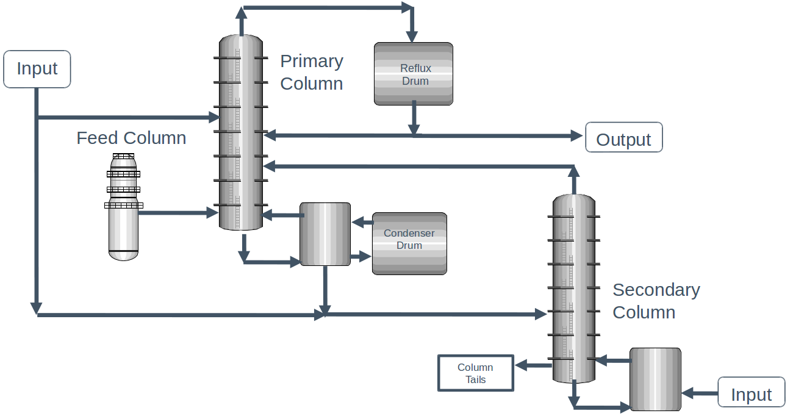

HW4 (due Monday 10/3 noon) [100 pts]
Contents
HW4 (due Monday 10/3 noon) [100 pts]#
Dow chemical process [50 pt]#

The dataset contains a number of operating conditions for each of the units in the process, as well as the concentration of impurities in the output stream. Let’s take a look:
import pandas as pd
import numpy as np
df = pd.read_excel('impurity_dataset-training.xlsx')
df.head()
| Date | x1:Primary Column Reflux Flow | x2:Primary Column Tails Flow | x3:Input to Primary Column Bed 3 Flow | x4:Input to Primary Column Bed 2 Flow | x5:Primary Column Feed Flow from Feed Column | x6:Primary Column Make Flow | x7:Primary Column Base Level | x8:Primary Column Reflux Drum Pressure | x9:Primary Column Condenser Reflux Drum Level | ... | x36: Feed Column Recycle Flow | x37: Feed Column Tails Flow to Primary Column | x38: Feed Column Calculated DP | x39: Feed Column Steam Flow | x40: Feed Column Tails Flow | Avg_Reactor_Outlet_Impurity | Avg_Delta_Composition Primary Column | y:Impurity | Primary Column Reflux/Feed Ratio | Primary Column Make/Reflux Ratio | |
|---|---|---|---|---|---|---|---|---|---|---|---|---|---|---|---|---|---|---|---|---|---|
| 0 | 2015-12-01 00:00:00 | 327.813 | 45.7920 | 2095.06 | 2156.01 | 98.5005 | 95.4674 | 54.3476 | 41.0121 | 52.2353 | ... | 62.8707 | 45.0085 | 66.6604 | 8.68813 | 99.9614 | 5.38024 | 1.49709 | 1.77833 | 3.32803 | 0.291226 |
| 1 | 2015-12-01 01:00:00 | 322.970 | 46.1643 | 2101.00 | 2182.90 | 98.0014 | 94.9673 | 54.2247 | 41.0076 | 52.5378 | ... | 62.8651 | 45.0085 | 66.5496 | 8.70683 | 99.8637 | 5.33345 | 1.51392 | 1.76964 | 3.29556 | 0.294044 |
| 2 | 2015-12-01 02:00:00 | 319.674 | 45.9927 | 2102.96 | 2151.39 | 98.8229 | 96.0785 | 54.6130 | 41.0451 | 52.0159 | ... | 62.8656 | 45.0085 | 66.0599 | 8.69269 | 100.2490 | 5.37677 | 1.50634 | 1.76095 | 3.23481 | 0.300552 |
| 3 | 2015-12-01 03:00:00 | 327.223 | 46.0960 | 2101.37 | 2172.14 | 98.7733 | 96.1223 | 54.9153 | 41.0405 | 52.9477 | ... | 62.8669 | 45.0085 | 67.9697 | 8.70482 | 100.3200 | 5.32315 | 1.47935 | 1.75226 | 3.31287 | 0.293752 |
| 4 | 2015-12-01 04:00:00 | 331.177 | 45.8493 | 2114.06 | 2157.77 | 99.3231 | 94.7521 | 54.0925 | 40.9934 | 53.0507 | ... | 62.8673 | 45.0085 | 67.6454 | 8.70077 | 100.6590 | 5.28227 | 1.44489 | 1.74357 | 3.33435 | 0.286107 |
5 rows × 46 columns
To use this data, we need to remove some problematic rows. We also want to select all the columns with “x” as features, and select the impurity as “y”. This will leave 10297 data points with 40 features, with the goal being to predict the impurity in the output stream! You should use this code to generate the features (X) and target (y).
def is_real_and_finite(x):
if not np.isreal(x):
return False
elif not np.isfinite(x):
return False
else:
return True
all_data = df[df.columns[1:]].values #drop the first column (date)
numeric_map = df[df.columns[1:]].applymap(is_real_and_finite)
real_rows = numeric_map.all(axis=1).copy().values #True if all values in a row are real numbers
X = np.array(all_data[real_rows,:-5], dtype='float') #drop the last 5 cols that are not inputs
y = np.array(all_data[real_rows,-3], dtype='float')
Train/validation/test split#
Split the dataset into an 80/10/10 train/val/test split.
Polynomial features with LASSO#
Using polynomials up to second order, fit a LASSO model. Print the validation MAE and make a parity plot for your model compared to the experiments!
Decision Tree#
Fit a decision tree to the dataset using just the features. Print the validation MAE and make a parity plot for your model compared to the experiments!
Decision Tree w/ Polynomial features#
Repeat the above using second order polynomial features. Print the validation MAE and make a parity plot for your model. Is this better or worse than just the original decision tree?
Decision Tree Analysis#
For your best decision tree above, analyze the first few splits in the tree (either by making a tree plot like we did in class, or with the text analysis. You can also use the feature_importances_ attribute on the fitted model.
Which columns/features are most important for predicting the output impurity?
See also
The examples for the classification problem here (export_text, plot_tree) also for regression models: https://scikit-learn.org/stable/modules/tree.html
Pick your best model from above and evaluate your final impurity error on the test set.#
Bonus [10pt]#
Try some other models from sklearn to see if you can do better than the decision tree. You can also try using feature selection (like in Prof. Medford’s lecture). Remember, when you try different models you can only use the train/validation sets.
If you find a model with a better validation score than your best model above, report the test set accuracy.
Materials dataset practice [50 pt]#
We saw in class how we could use matminer to generate composition features. In class we built some simple models to predict the band gap of a materials.
I want your help classifying whether a particular material/composition is a metal based on experimental data!
Load the dataset and train/val/test split#
Load the “matbench_expt_is_metal” and generate 60/20/20 train/val/test splits.
What fraction of the data is a metal?
Generate composition features#
Use the magpie features like we did in class.
Fit a logistic regression model to the features#
Report the accuracy on the validation set. How does this compare to the fraction of metals in the training dataset?
Fit a decision tree classifier#
A decision tree classifier is very similar to the decision tree regressor we used in class. Fit one to your data, and report the accuracy on the validation set. Try playing with the decision tree classifier parameters (like max_depth, etc) to see if you can get better results.
See also
https://scikit-learn.org/stable/modules/generated/sklearn.tree.DecisionTreeClassifier.html
Model explainability#
Look at the feature_importances_ attribute of your fitted decision tree classifier. Which features matter the most in your model? Does this make sense based on what you remember from general chemistry?
Test error#
Pick your best model from above and evaluate the test accuracy.
Materials prediction#
Go to the Material Project website, then the Materials Explorer app. Filter by “Is Metal” under the electronic structure toggle in the filters list.
Pick three compositions that according to simulations were metals, and 3 that were predicted to be not metals. How does your best classifier from above work on these?
A few things to keep in mind:
Simulations are not perfect at predicting experimental properties
The experimental dataset you used is probably not indicative of all possible structures in the Materials Project